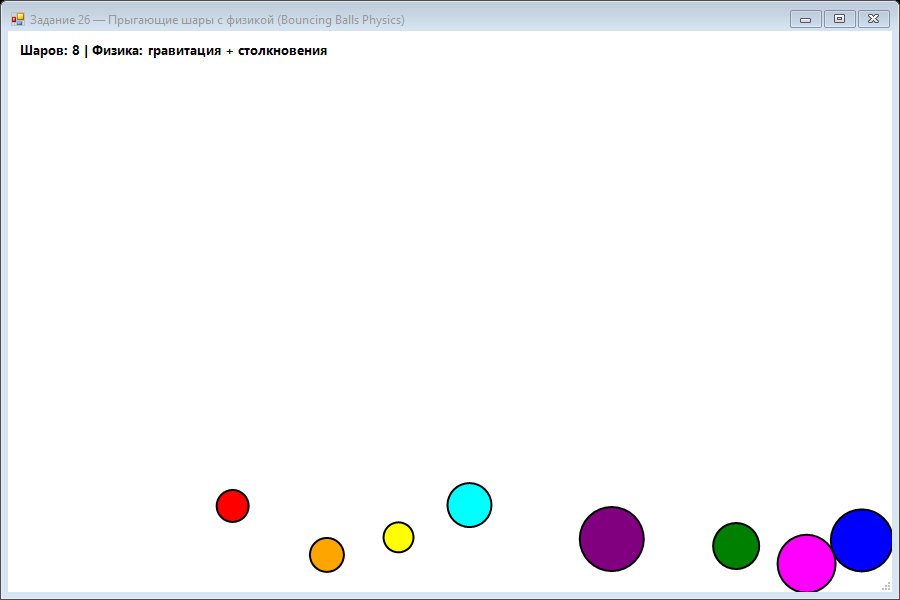

Урок 8.6: Физика столкновений
Упругие столкновения
При столкновении двух шаров сохраняются импульс и энергия. На практике важно вычислить нормаль удара и скорректировать скорости.
📝 Пример задания — шары с физикой
8 шаров с гравитацией, трением и упругостью. Обработка столкновений через нормальный импульс с разделением перекрывающихся шаров:
using System;
using System.Drawing;
using System.Drawing.Drawing2D;
using System.Windows.Forms;
namespace CSharpGraphicsApp
{
public class Task26_BouncingBallsPhysics : Form
{
private class Ball
{
public PointF Position { get; set; }
public PointF Velocity { get; set; }
public float Radius { get; set; }
public Color Color { get; set; }
public float Mass { get; set; }
public const float Gravity = 0.3f;
public const float Friction = 0.98f;
public const float Elasticity = 0.85f;
public void Update(int width, int height)
{
var vel = Velocity;
var pos = Position;
vel.Y += Gravity;
vel.X *= Friction;
vel.Y *= Friction;
pos.X += vel.X;
pos.Y += vel.Y;
if (pos.X - Radius < 0 || pos.X + Radius > width)
{
vel.X = -vel.X * Elasticity;
pos.X = pos.X - Radius < 0 ? Radius : width - Radius;
}
if (pos.Y - Radius < 0 || pos.Y + Radius > height)
{
vel.Y = -vel.Y * Elasticity;
pos.Y = pos.Y - Radius < 0 ? Radius : height - Radius;
}
Position = pos; Velocity = vel;
}
public void Draw(Graphics g)
{
using (var brush = new SolidBrush(Color))
using (var pen = new Pen(Color.Black, 2))
{
g.FillEllipse(brush,
Position.X - Radius, Position.Y - Radius,
Radius * 2, Radius * 2);
g.DrawEllipse(pen,
Position.X - Radius, Position.Y - Radius,
Radius * 2, Radius * 2);
}
}
public bool CollidesWith(Ball other)
{
float dx = Position.X - other.Position.X;
float dy = Position.Y - other.Position.Y;
return (float)Math.Sqrt(dx * dx + dy * dy) < Radius + other.Radius;
}
}
private Ball[] balls;
private Random rnd = new Random();
private readonly Timer timer = new Timer();
public Task26_BouncingBallsPhysics()
{
Text = "Задание 26 — Шары с физикой (Bouncing Balls Physics)";
Size = new Size(900, 600);
BackColor = Color.White;
DoubleBuffered = true;
Paint += Form_Paint;
Color[] colors = { Color.Red, Color.Blue, Color.Green, Color.Yellow,
Color.Purple, Color.Orange, Color.Cyan, Color.Magenta };
balls = new Ball[8];
for (int i = 0; i < balls.Length; i++)
balls[i] = new Ball
{
Position = new PointF(rnd.Next(50, 850), rnd.Next(50, 200)),
Velocity = new PointF((float)(rnd.NextDouble() - 0.5) * 8,
(float)(rnd.NextDouble() - 0.5) * 8),
Radius = rnd.Next(15, 35),
Color = colors[i], Mass = 1.0f
};
timer.Interval = 16;
timer.Tick += Timer_Tick;
timer.Start();
FormClosed += (s, e) => timer.Stop();
}
private void Timer_Tick(object sender, EventArgs e)
{
foreach (var b in balls)
b.Update(ClientSize.Width, ClientSize.Height);
for (int i = 0; i < balls.Length; i++)
for (int j = i + 1; j < balls.Length; j++)
if (balls[i].CollidesWith(balls[j]))
HandleCollision(balls[i], balls[j]);
Invalidate();
}
private void HandleCollision(Ball a, Ball b)
{
float dx = b.Position.X - a.Position.X;
float dy = b.Position.Y - a.Position.Y;
float dist = (float)Math.Sqrt(dx * dx + dy * dy);
if (dist == 0) dist = 0.01f;
float nx = dx / dist, ny = dy / dist;
float dvn = (b.Velocity.X - a.Velocity.X) * nx
+ (b.Velocity.Y - a.Velocity.Y) * ny;
if (dvn >= 0) return;
float impulse = dvn / (a.Mass + b.Mass);
var av = a.Velocity; av.X += impulse * a.Mass * nx; av.Y += impulse * a.Mass * ny; a.Velocity = av;
var bv = b.Velocity; bv.X -= impulse * b.Mass * nx; bv.Y -= impulse * b.Mass * ny; b.Velocity = bv;
float overlap = (a.Radius + b.Radius - dist) / 2;
var ap = a.Position; ap.X -= overlap * nx; ap.Y -= overlap * ny; a.Position = ap;
var bp = b.Position; bp.X += overlap * nx; bp.Y += overlap * ny; b.Position = bp;
}
private void Form_Paint(object sender, PaintEventArgs e)
{
e.Graphics.SmoothingMode = SmoothingMode.AntiAlias;
foreach (var b in balls) b.Draw(e.Graphics);
e.Graphics.DrawString($"Шаров: {balls.Length} | Физика: гравитация + столкновения",
new Font("Segoe UI", 10, FontStyle.Bold), Brushes.Black, 10, 10);
}
}
}Практика
- Реализуйте тела как шары с массой и скоростью.
- Обрабатывайте столкновения друг с другом и стенками.
- Добавьте гравитацию и трение.
- Следите за отображением и позицией объектов.
Задание по аналогии: Шары с физикой
По аналогии с Task26_BouncingBallsPhysics реализуйте физическую симуляцию шаров с упругими столкновениями.
- Создайте внутренний класс
Ballс полямиPosition,Velocity,Radius,Color,Massи константамиGravity = 0.3f,Friction = 0.98f,Elasticity = 0.85f. - В методе
Ball.Update(width, height): добавляйте гравитацию кvel.Y, умножайте скорости на Friction, обновляйте позицию. При выходе за стену инвертируйте скорость * Elasticity и фиксируйте позицию. - В методе
CollidesWith(Ball other)вычислите расстояние между центрами черезsqrt(dx²+dy²)и сравните с суммой радиусов. - В методе
HandleCollision(Ball a, Ball b)вычислите нормаль удараnx = dx/dist, проекцию относительной скоростиdvn, импульс и скорректируйте скорости обоих шаров. Разделите шары, убрав перекрытие. - Дополнительно: добавьте обработчик
MouseClick, который при клике создаёт новый шар в точке курсора с случайными цветом и радиусом.
Пример результата выполнения задания:

Скриншот программы (Task26)
💡 Совет: Проверка
if (dvn >= 0) return; в HandleCollision критична — она предотвращает двойное применение импульса, когда шары уже разлетаются в стороны.
Проверка
Почему важно разделять скорость на нормальную и касательную составляющие? Что происходит, если не корректировать наложение шаров?